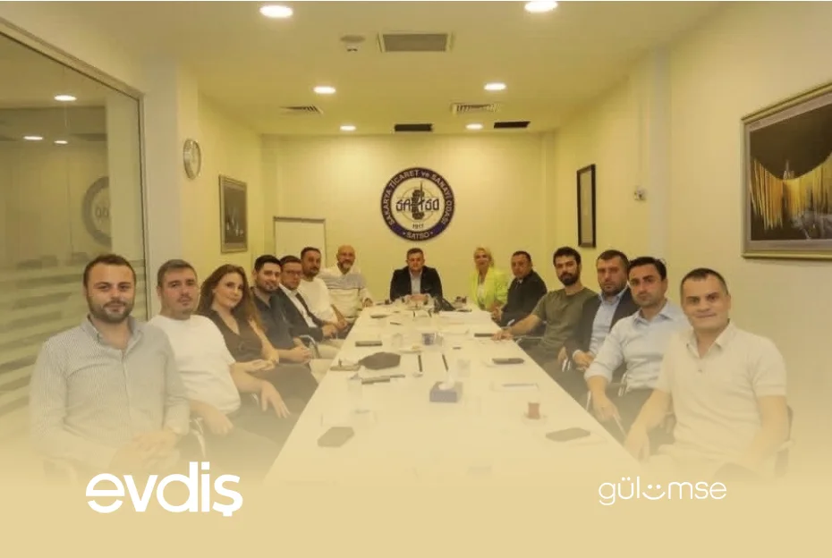
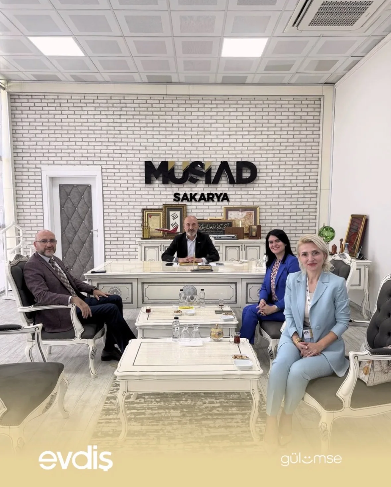
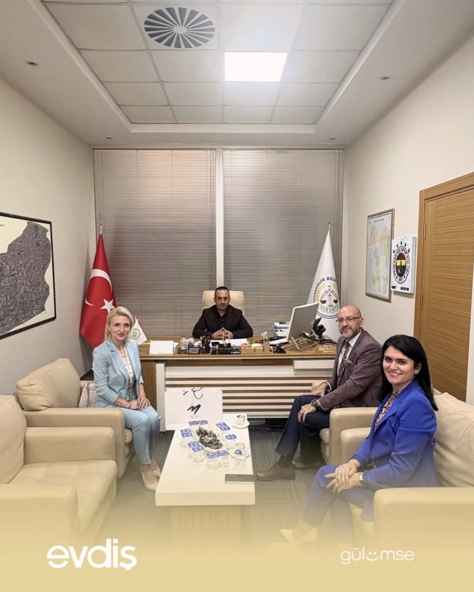
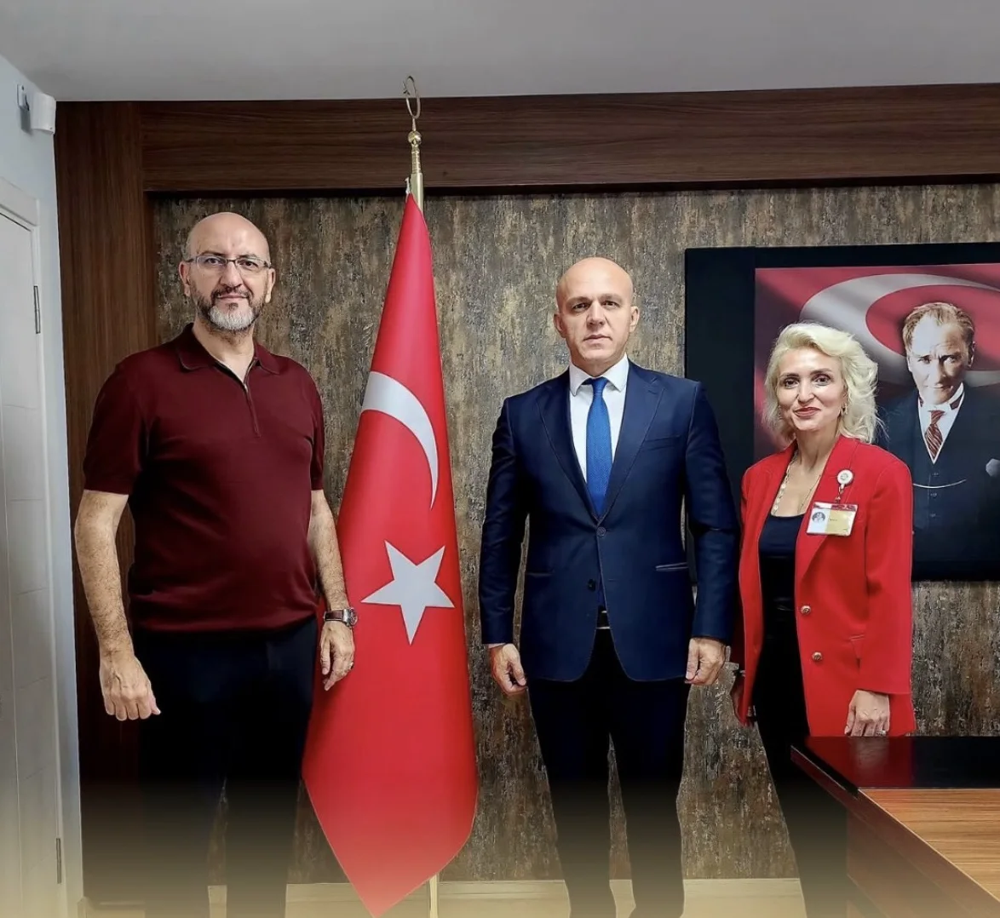
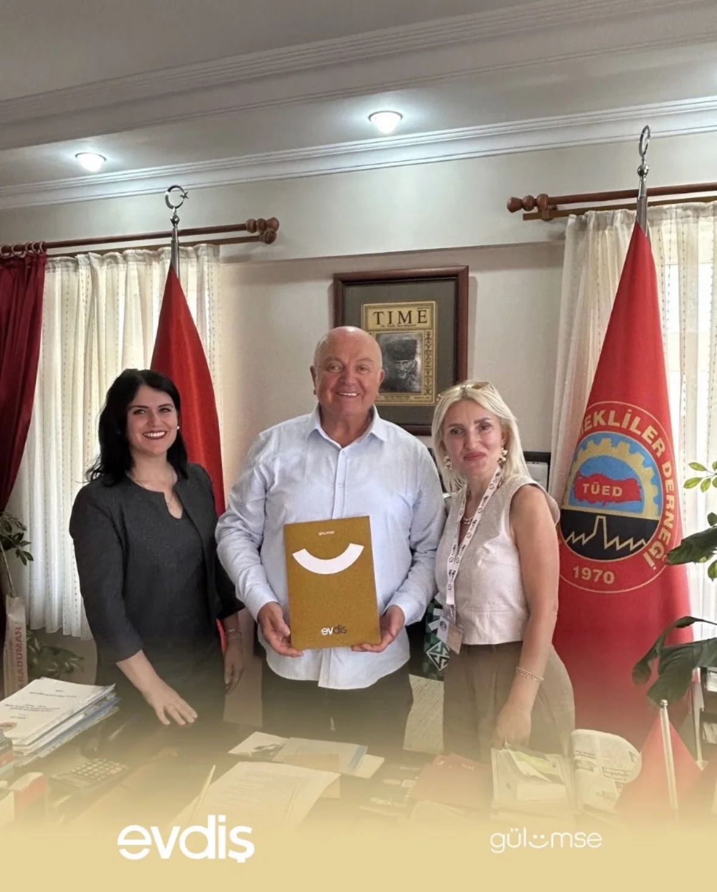
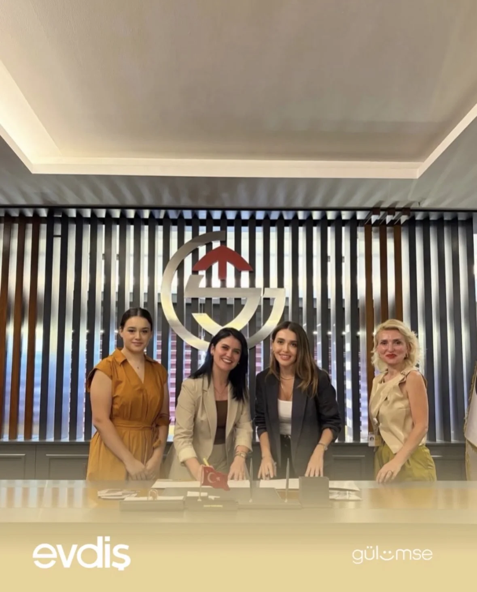

Evdiş Dış Cephe, Karşılama ve Klinik Koridoru
Evdiş Ağız ve Diş Sağlığı Merkezi — Sakarya (Serdivan & Adapazarı) kişisiz mimari tanıtım kesiti: dış cephe, zemin kat karşılama ve klinik koridoru (1.60 MB).
Sakarya'daki kamu kurumları, meslek odaları, sivil toplum kuruluşları ve sağlık paydaşlarımızla gerçekleştirdiğimiz kurumsal ziyaretlerimiz, kliniğimizin tanıtım videoları ve Serdivan ile Adapazarı şubelerimizden güncel kareler.
Evdiş Ağız ve Diş Sağlığı Merkezi — Sakarya (Serdivan & Adapazarı) kişisiz mimari tanıtım kesiti: dış cephe, zemin kat karşılama ve klinik koridoru (1.60 MB).
Evdiş Ağız ve Diş Sağlığı Merkezi — Sakarya (Serdivan & Adapazarı) kişisiz klinik mimari kesiti: tedavi odaları, Dentsply Sirona ünit, Zumax mikroskop ve çocuk oyun alanı (2.50 MB).
Evdiş Ağız ve Diş Sağlığı Merkezi — Sakarya (Serdivan & Adapazarı) resmi klinik tanıtım videosu (6.73 MB).

Gazetemiz imtiyaz sahibi ve iş insanı Melih Uyar, Özel Dentim Ağız ve Diş Sağlığı Polikliniği Kurucusu Diş Hekimi Erdoğan Tarım ile birlikte, Çene Cerrahı Diş Hekimi Seyit Yılmaz’ı ziyaret etti.

Beyhekim Hastanesi'ne gerçekleştirdiğimiz ziyaretimiz kapsamında, yönetim kurulu başkanı Melda KIRDAR ile bir araya gelerek ağız ve diş sağlığı alanındaki hizmetlerimiz ve kurumsal iş birliği fırsatlarımız hakkında görüş alışverişinde bulunduk. Sağlık alanında kurumlar arası iş birliklerini güçlendirmeyi ve ağız ve diş sağlığı konusunda farkındalığı arttırmayı önemsiyoruz. Gerçekleştirilen ziyarette, CEO’muz Ozan Aydınlar' da yer alarak kurumlar arası iş birliğinin geliştirilmesine yönelik değerlendirmelerde bulundu. Nazik ev sahiplikleri ve değerli iş birlikleri için Beyhekim Hastanesi ailesine teşekkür ederiz.

Özgüllü Şirketler Grubu'na gerçekleştirdiğimiz ziyaretimiz kapsamında, Yunus Emre GÜLLÜ ile bir araya gelerek ağız ve diş sağlığı alanındaki hizmetlerimiz ve kurumsal iş birliği fırsatlarımız hakkında görüş alışverişinde bulunduk. Sağlık alanında kurumlar arası iş birliklerini güçlendirmeyi ve ağız ve diş sağlığı konusunda farkındalığı arttırmayı önemsiyoruz. Gerçekleştirilen ziyarette, CEO’muz Ozan Aydınlar' da yer alarak kurumlar arası iş birliğinin geliştirilmesine yönelik değerlendirmelerde bulundu. Nazik ev sahiplikleri ve değerli iş birlikleri için Beyhekim Hastanesi ailesine teşekkür ederiz.

Sakarya Ticaret Borsası'na gerçekleştirdiğimiz ziyaretimiz kapsamında, kurum temsilcileri bir araya gelerek ağız ve diş sağlığı alanındaki hizmetlerimiz ve kurumsal iş birliği fırsatlarımız hakkında görüş alışverişinde bulunduk. Sağlık alanında kurumlar arası iş birliklerini güçlendirmeyi ve ağız ve diş sağlığı konusunda farkındalığı arttırmayı önemsiyoruz. Gerçekleştirilen ziyarette, CEO’muz Ozan Aydınlar'da yer alarak kurumlar arası iş birliğinin geliştirilmesine yönelik değerlendirmelerde bulundu. Nazik ev sahiplikleri ve değerli iş birlikleri için Sakarya Ticaret Borsası'na teşekkür ederiz.

Türkiye Odalar ve Borsa Birliği'ne gerçekleştirdiğimiz ziyaretimiz kapsamında, TOBB Sakarya İl Genç Girişimciler Kurulu İcra Komitesi Başkanı Semih ÇİFTÇİ ve icra komitesi üyeleri ile SATSO hizmet binasında bir araya gelerek ağız ve diş sağlığı alanındaki hizmetlerimiz ve kurumsal iş birliği fırsatlarımız hakkında görüş alışverişinde bulunduk. Sağlık alanında kurumlar arası iş birliklerini güçlendirmeyi ve ağız ve diş sağlığı konusunda farkındalığı arttırmayı önemsiyoruz. Gerçekleştirilen ziyarette, CEO’muz Ozan Aydınlar'da yer alarak kurumlar arası iş birliğinin geliştirilmesine yönelik değerlendirmelerde bulundu. Nazik ev sahiplikleri ve değerli iş birlikleri için Türkiye Odalar ve Borsa Birliği'ne teşekkür ederiz.

MÜSİAD'a gerçekleştirdiğimiz ziyaretimiz kapsamında, kurum temsilcileri ile bir araya gelerek ağız ve diş sağlığı alanındaki hizmetlerimiz ve kurumsal iş birliği fırsatlarımız hakkında görüş alışverişinde bulunduk. Sağlık alanında kurumlar arası iş birliklerini güçlendirmeyi ve ağız ve diş sağlığı konusunda farkındalığı arttırmayı önemsiyoruz. Gerçekleştirilen ziyarette, CEO’muz Ozan Aydınlar'da yer alarak kurumlar arası iş birliğinin geliştirilmesine yönelik değerlendirmelerde bulundu. Nazik ev sahiplikleri ve değerli iş birlikleri için MÜSİAD'a teşekkür ederiz.

Erenler Belediyesi'ne gerçekleştirdiğimiz ziyaretimiz kapsamında, Başkan yardımcıları ile bir araya gelerek ağız ve diş sağlığı alanındaki hizmetlerimiz ve kurumsal iş birliği fırsatlarımız hakkında görüş alışverişinde bulunduk. Sağlık alanında kurumlar arası iş birliklerini güçlendirmeyi ve ağız ve diş sağlığı konusunda farkındalığı arttırmayı önemsiyoruz. Gerçekleştirilen ziyarette, CEO’muz Ozan Aydınlar'da yer alarak kurumlar arası iş birliğinin geliştirilmesine yönelik değerlendirmelerde bulundu. Nazik ev sahiplikleri ve değerli iş birlikleri için Erenler Belediyesi'ne teşekkür ederiz.

Serdivan İlçe Milli Eğitim Müdürlüğü'ne gerçekleştirdiğimiz ziyaretimiz kapsamında, Müdürümüz Eşref BAŞER ile bir araya gelerek ağız ve diş sağlığı alanındaki hizmetlerimiz ve kurumsal iş birliği fırsatlarımız hakkında görüş alışverişinde bulunduk. Sağlık alanında kurumlar arası iş birliklerini güçlendirmeyi ve ağız ve diş sağlığı konusunda farkındalığı arttırmayı önemsiyoruz. Gerçekleştirilen ziyarette, CEO’muz Ozan Aydınlar'da yer alarak kurumlar arası iş birliğinin geliştirilmesine yönelik değerlendirmelerde bulundu. Nazik ev sahiplikleri ve değerli iş birlikleri için Serdivan İlçe Milli Eğitim Müdürlüğü'ne teşekkür ederiz.

Emekliler Derneği Sakarya Şubesi'ne gerçekleştirdiğimiz ziyaretimiz kapsamında, kurum temsilcileri ile bir araya gelerek ağız ve diş sağlığı alanındaki hizmetlerimiz ve kurumsal iş birliği fırsatlarımız hakkında görüş alışverişinde bulunduk. Sağlık alanında kurumlar arası iş birliklerini güçlendirmeyi ve ağız ve diş sağlığı konusunda farkındalığı arttırmayı önemsiyoruz. Nazik ev sahiplikleri ve değerli iş birlikleri için Emekliler Derneği'ne teşekkür ederiz.

Sakarya GİAD'a gerçekleştirdiğimiz ziyaretimiz kapsamında, kurum temsilcileri ile bir araya gelerek ağız ve diş sağlığı alanındaki hizmetlerimiz ve kurumsal iş birliği fırsatlarımız hakkında görüş alışverişinde bulunduk. Sağlık alanında kurumlar arası iş birliklerini güçlendirmeyi ve ağız ve diş sağlığı konusunda farkındalığı arttırmayı önemsiyoruz. Nazik ev sahiplikleri ve değerli iş birlikleri için Sakarya GİAD ailesine teşekkür ederiz.